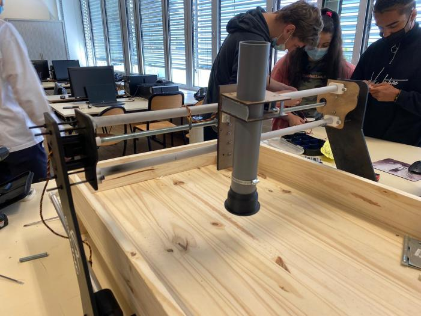

Le seedling bot est un dispositif de germination automatisé qui prendra en compte tous les criteres necessaire a la croissance en autonomie totale.
Ce projet a ete mene par toute la classe de terminale-STI2D2 (sciences et technologies de l'industrie du developpement durable) sous la supervision de Monsieur Naegelen et Monsieur Mortier. Notre classe etait composee de 2 groupes: Un groupe SIN (Systeme d'Information et Numerique) qui s'occupe de tout l'aspect informatique/programmation. Un groupe ITEC (innovation Technologique et Eco-Conception) qui prend en charge tous les elements de conception 3D.
La germination:
Afin que nous menons a bien ce projet, il etait essentiel de comprendre tous les besoins de la plante. Le seedling bot sera capable d'accomplir plusieurs taches en autonomie complete, notament:
Planter des semis de facon autonome
Hydrater la plante sans la noyer
Ventiller le dispositif
Maintenir le dispositif a 20 degrees celcius
Eclairer la plante avec des rayons UV
Retirer les mauvaises herbes
Ces paramettres permettent de repondre a l'integraliter des besoins d'une plante lors de sa germination. Voici une video timelapse qui demontre la croissance entiere d'une plante:
Ayant tenu compte de tous ces elements, nous etions presque prets pour la conception, mais d'abbord...
Pour qui?
Notre ultime objectif etait de faire pousser des plantes dans l'espace. Et ce n'est pas si simple que ca, car il y a plusieurs criteres a prendre en compte, comme par exemple, la gravite manque. L'eau ne coule pas. La lumiere et le vent ne sont que artificiels. Mais grace a de milliers d'etudiants, la Nasa espere surmonter toutes ces difficultes. Une bonne plante de l'espace doit etre peu encombrante et tres productive. Les astronautes vivant a bord de l'ISS ont connu moult echecs en matiere de jardinage spatial. La Nasa envisage d'utiliser des robots jardiniers pour automatiser le processus afin que l'equipage puisse se consacrer a d'autres taches. Source: Futura-sciences.com
Conception:
Pour ce qui concerne la conception, le groupe SIN (nous) ne pouvait pas commencer la programmation avant que le groupe ITEC qui eux prennent en charge la conception nous disent ce dont ils ont besoin au niveau de la programmation et de l'électrique, donc nous nous sommes mis ensemble pour discuter et proposer des idées sur comment on pourrait répondre au exigences. Suite a beaucoup de concepts, celui qui semblait le plus réalisable était celui-ci: (Ce modèle 3D a été réalisé par les élèves du groupe ITEC sur l'application Onshape)
Un bac de terre qui serait équipé d'un bras motorisé qui viendrait répondre a tous les besoins de la plante. Le bac serait aussi équippé de volets automatiques et de ventilateurs qui assurerait l'aération et une bonne circulation d'air pour les plantes. Le bras motorisé pourrait venir chercher des outils qui s'attachent de manière magnétique au bras afin de pouvoir accomplir des différentes manipulations. Voici les différents outils: parmis ces 3 outils il y a donc un outil de sarclage, un autre qui permet de planter des graines et un dernier qui pourrait capter le niveau d'hydratation dans la terre afin de savoir s'il faut rajouter de l'eau pour la plante ou pas.
Mon apport personnel:
Chaque élève a été attribué une tâche. Ma tache personnelle etait: La portique cinématique du bras sur les axes X, Y. Ma tache était d'assurer la programmation du mouvement 2 dimensionnel du bras porteur d'outils du système.
J'ai du faire mon choix de composant, et programmer les moteurs. Les critères essentiels a prendre en compte lors de la sélection de composant étaient:
- Le composant qui dépense le moins d'énergie. - Un composant qui représente un bon ratio qualité - prix - Un composant qui peut mener a bout la tache exigée. - La taille du composant ne doit pas être trop grande.
Dans le cas du Seedling-Bot, j'ai choisi comme composants, un servomoteur avec un signal de retour (le signal de retour me permettrait d'avoir une information sur la position actuel du servomoteur pour pouvoir tenir compte d'un décalage pour assurer une sécurité physique du système). Afin de programmer mon servomoteur, j'ai utilisé l'application LabView car celle-ci me permettait de créer une interface d'utilisateur ce qui est très pratique lors du débogage de mon programme.
J'ai choisit le servomoteur SCS15: Je l'ai choisit parce que celui-ci permettait un retour de l'information sur sa position (ce qui est bénéfique car cela m'a permit de ne pas utiliser un capteur de mesure tel qu'un capteur ultra-son ou infrarouge pour connaitre la position actuelle du servomoteur sur un axe. L'absence d'un capteur permet donc de sauver de l'énergie, et réduit le cout total de production du seedling-bot pour un même résultat), il avait aussi une rotation continue. Ce servo-moteur était parfait pour cette tâche. Au total, je n'en avait besoin de 2.
Une fois que j'avais choisi mes composants j'ai du réaliser des schémas électriques et des schémas de câblages.
Voici un exemple du programme labview que j'ai créer afin de pouvoir communiquer avec le servomoteur:
L'application Labview nous permet également de créer une interface graphique:
La partie à gauche de l'interface (jaune) permet de controller le servomoteur de l'axe X et la partie à droite (turquoise) permet de controller le servomoteur de l'axe Y.
Produit final:
Voici le résultat final de notre projet. Malheureusement, à cause du Covid-19 et du confinement, nous n'avons pas pu mener à fin ce projet...
Une photo de l'ensemble du seedling-bot sans les composants éléctroniques:
Nous l'avons réalisé en bois.
Un petit GIF montrant le servomoteur de l'axe X en mouvement:
La raison pour laquelle il se deplace si lentement est juste à cause de l'alimentation que nous avons utilisé pour le test. Celle-ci ne fournissait pas assez d'energie pour faire tourner le servomoteur a sa vitesse maximale.
Et pour finir, voici le bras porteur d'outils completement assemblé:

Les outils s'attachent au bras magnetiquement.
La raison pour laquelle j'ai choisit de vous présenter ce projet est car j'ai beaucoup aimé participer dedans. C'était un travail tres interessant et malgre le fait que nous n'avons pas pu le finir, c'est un des projets les plus cool dans lequel j'ai participer.


 Ma tache personnelle etait:
Ma tache personnelle etait: